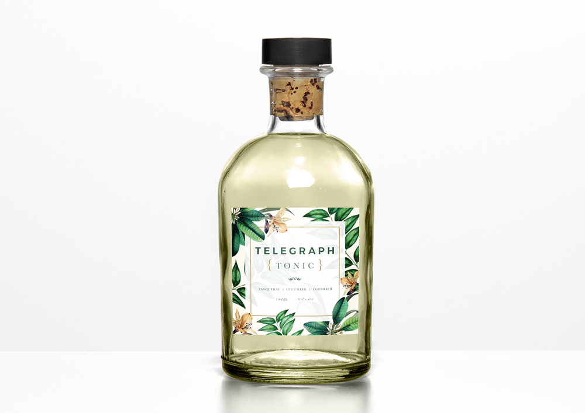
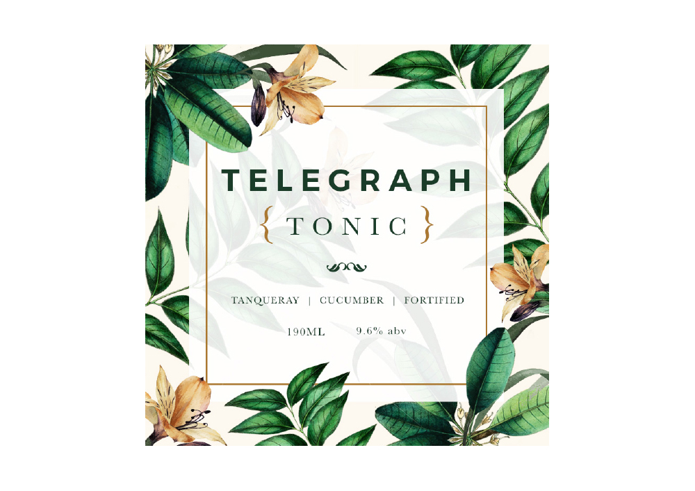
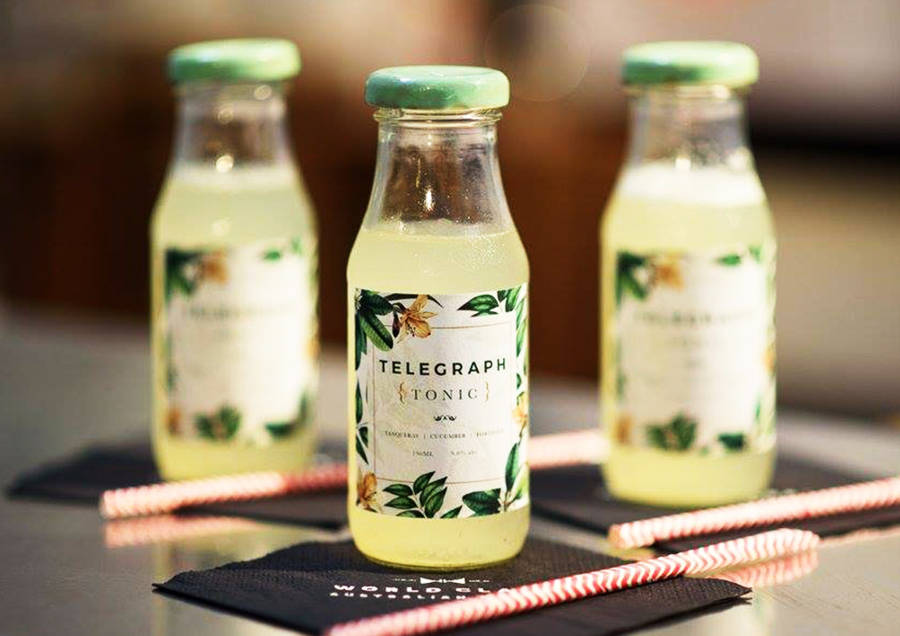
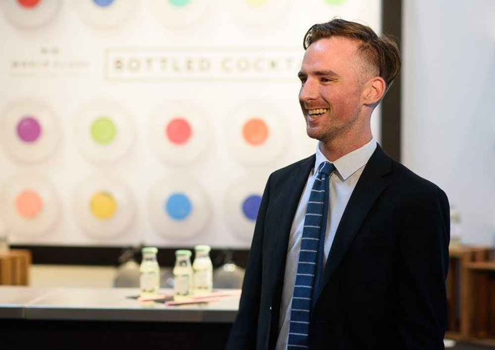

Telegraph Tonic
Matt Linklater is a Sydney mixologist, who entered 'World Class', one of the industry's most respected bartending competition. Matt needed a trendy and botanic inspired label to exhibit his Tonic cocktail. The cocktail is made out of Tanqueray, cucumber and seasoning which transitions from a pale green colour into a cucumber green from a tablet dropped into a bottle.




